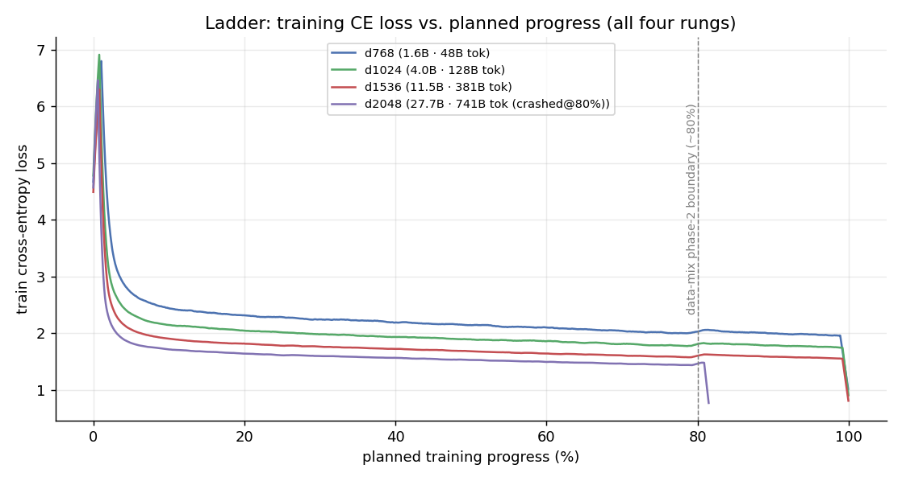
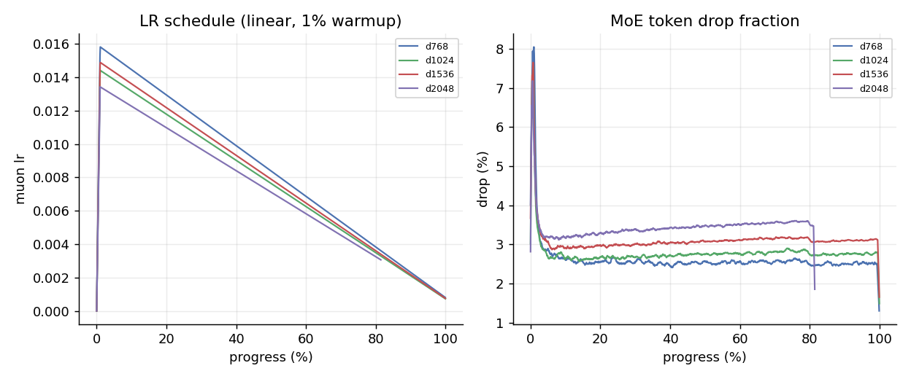
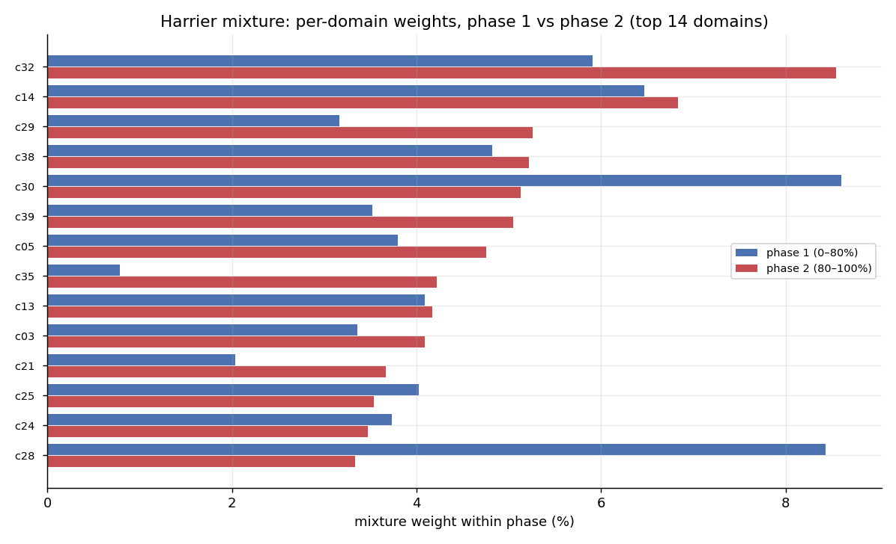
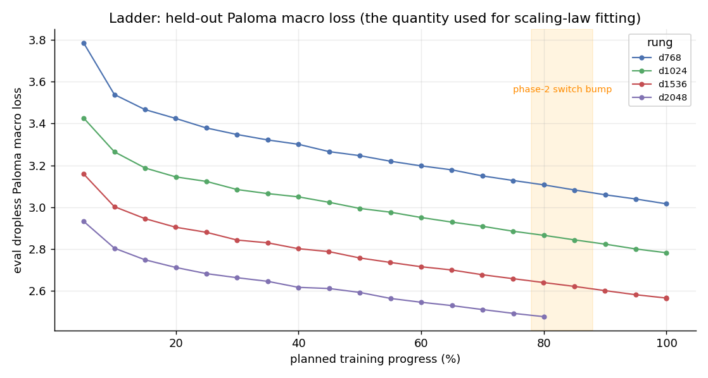
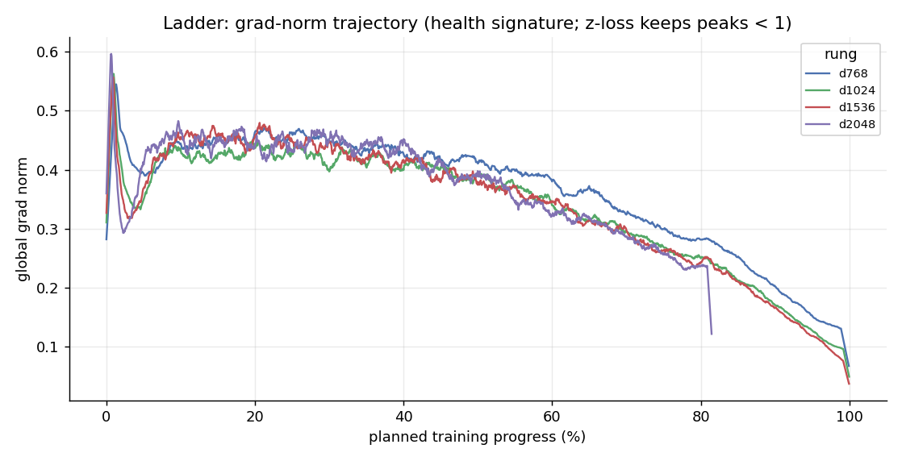
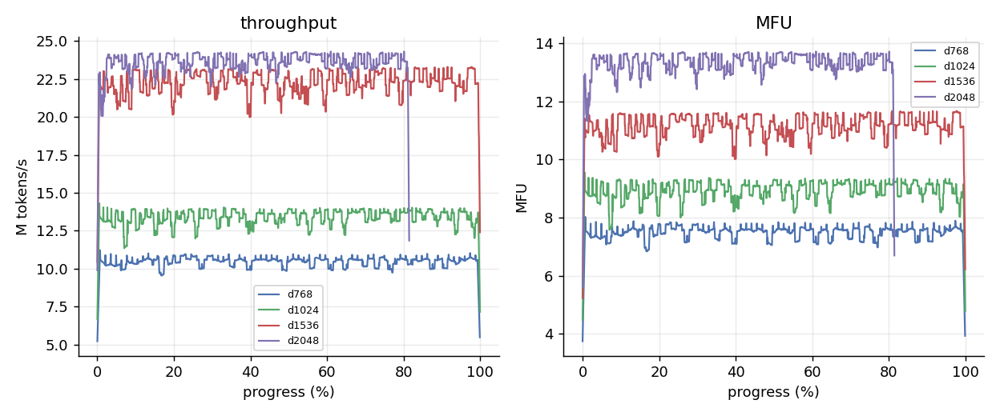
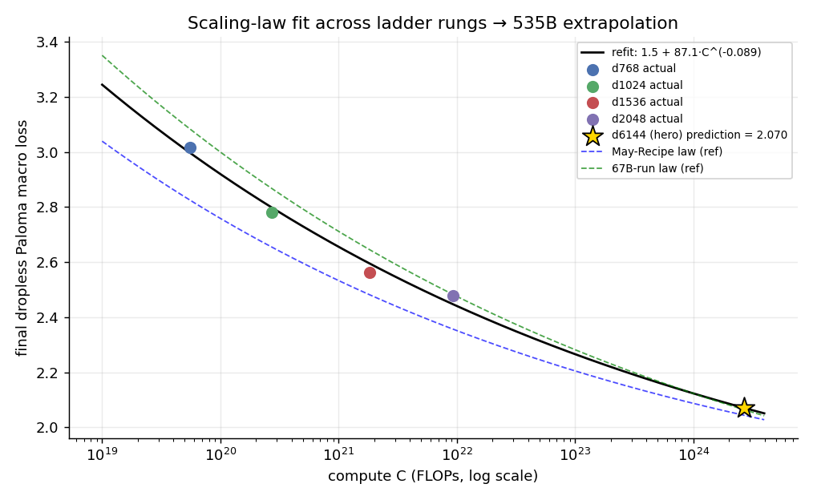
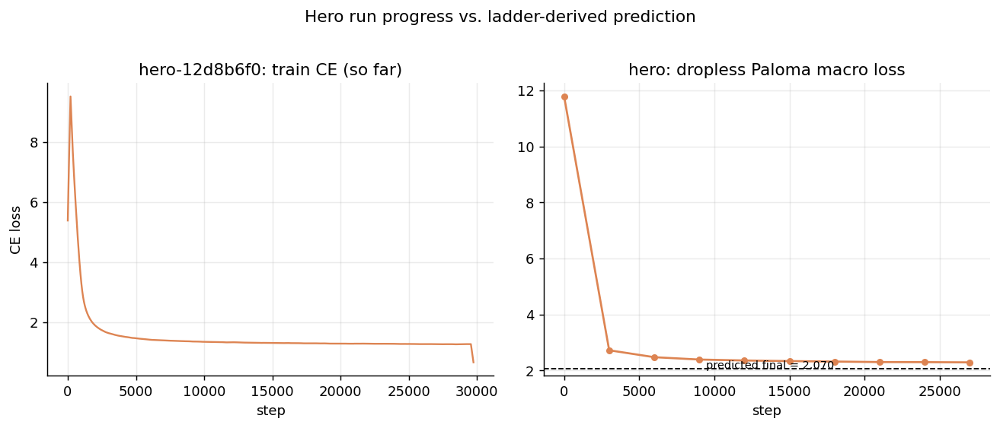

实验设计：为什么是「宽度阶梯」
一套只用约 1% 算力的预演系统，目标是提前暴露 535B 训练里几乎所有会致命的坑。
Marin 的做法不是直接训练一个 535B 的 MoE，而是先在同一套代码、同一种数据、同一族超参下，跑四个只改变宽度（hidden dim）、其余结构比例尽量保持的小模型。这是一座「宽度阶梯」（width ladder）：从 d768 一路爬到 d2048，最大一档也只有 27.7B 总参数——相比 hero 的 535.3B，整套阶梯的成本只占总预算的 ~1%。
为什么只变宽度？因为这是 µP（Maximal Update Parametrization）类超参迁移理论的适用场景：在宽度方向上，最优学习率等超参的迁移规律最干净；深度、专家数、数据课程则保持不动，避免引入混杂变量。阶梯的每一档都不是为了刷榜，而是为了回答一个工程问题：「如果这个坑在 535B 上才第一次出现，我们就完了——它会不会先在 1.6B 上暴露？」
| 档位 | hidden | 总参数 | 步数 | tokens | 峰值 LR | 状态 |
|---|---|---|---|---|---|---|
d768 | 768 | 1.6B | 11,419 | 48B | 0.0158 | 完成 |
d1024 | 1024 | 4.0B | 15,275 | 128B | 0.0144 | 完成 |
d1536 | 1536 | 11.5B | 15,127 | 381B | 0.0149 | 完成 |
d2048 | 2048 | 27.7B | 20,072 | 926B | 0.0134 | 80% 崩溃 未续训 |
d6144 hero | 6144 | 535.3B | 390,251 | 18T | 0.00329 | 训练中 正式训练 |
注意一个细节：四个小档的峰值 LR 都稳定在 0.013–0.016 的窄带内，而 hero 直接跳到 0.00329（Muon）+ 0.000759（Adam 双优化器组）。LR 没有随宽度单调漂移，说明 µP 迁移在宽度维度上确实"锁住了"最优区间——这正是阶梯想验证的第一件事。
训练曲线全景：小模型是预告片
四条 train/CE 曲线叠在一起，是整场预演最直观的一张图。

marin-community/marin_moe 公开项目的 sampledHistory 全分辨率拉取（d768:1142 点 / d1024:1636 点 / d1536:1513 点 / d2048:2007 点）。四条曲线呈现教科书式的规模单调性：越宽的档位，同等步数下 loss 越低，且整条曲线整体下移。这不是废话——它验证了 MoE 架构在宽度缩放下的"健康度"：没有出现大档反而更差的病态（那种情况通常意味着路由或初始化在大宽度下失效）。
更有信息量的是曲线形状而非终点值。所有档位共享同一族形状：开场的陡降（冷启动）、中段的缓坡（stable 平台期）、末段的二次下探（decay 阶段学习率退火带来的"礼物"）。这个三段式形状正是 WSD（Warmup-Stable-Decay）调度的指纹。小模型把这套形状预演了四遍，hero 便可以"照谱训练"——如果 hero 的曲线偏离这个族形状（比如 decay 段没有出现二次下探），那就是一个早期警报。
阶段切分：stable 与 decay 的客观判定
用学习率曲线和 loss 二阶特征，把"感觉进入了 decay"变成可判定的客观事件。

「stable 阶段」和「decay 阶段」在 Marin 的语境里不是文学修辞，而是有严格定义的两段：stable 是学习率恒定在峰值的平台期，模型在此阶段遍历数据、积累能力；decay 是末段学习率退火期，loss 会在此阶段显著二次下探——这是 WSD 相对纯 cosine 调度的核心卖点：decay 的"礼物"可以事后追加，而不必重训。
判定的客观方法有两个锚点：其一，直接看 LR 曲线的退火拐点（程序化的、无歧义的）；其二，用 loss 的二阶特征交叉验证——decay 起点附近 loss 下降速率会明显变陡。本文以 LR 退火起点为主锚。结果显示四档的 decay 触发点都落在各自总步数的 ~80% 附近，与数据课程 phase2 的边界（见下节）精确对齐——这不是巧合，而是课程设计：在 decay 阶段切换到更高质量的数据配比，让退火的"礼物"用在最好的语料上。
观测结果：四档 decay_start / total_steps ≈ 0.80（与 phase2 数据切换点重合）
数据配比与顺序：Harrier 两幕课程
25.6T 原始 tokens 压成 23.11T 有效，292 个源聚成 40 个语义域 × 5 个质量桶，分两幕喂给模型。

data_mix_clusters.json 与 harrier_mix_2026_08_18 配比文件。Marin 的数据工程核心是把"互联网"压缩成一张可微调的旋钮面板。原始 25.6T tokens 经过滤去重后剩 23.11T 有效；292 个异构源（Common Crawl 切片、arXiv、GitHub、Wikipedia、论坛、图书……）先按语义聚类成 40 个域，每个域再按质量信号分成 Q0–Q4 五个桶。这样一来，"数据配比"就从 292 维的手动调参变成 40×5 的结构化决策。
更关键的是顺序。Harrier 配比不是静态的，而是分两幕：phase1（前 ~80% 步数）用覆盖面更广的配比打基础；phase2（后 ~20%）切到更高质量、更偏向推理/知识的配比。这个切换点与上一节的 decay 起点对齐——在模型最"听得进"的退火期，喂最好的数据。mixture 指标在 W&B 里只有两个点（phase 边界），恰恰印证这是一次性的课程切换而非连续变化。
mixture 键的原因。
下游评测：Paloma 16 域困惑度
训练 loss 只是代理，Paloma 在 16 个异质域上的困惑度才是"模型真的变聪明了吗"的考官。

Paloma 是 Marin 选用的困惑度基准，覆盖 16 个风格迥异的域——从 4chan、manosphere、twitterAAE 这类网络口语，到 wikitext_103、m2d2_wikipedia、ptb 这类正式文本，再到 dolma_100_programing_languages（代码）、m2d2_s2orc（学术论文）、mc4（多语）。它的价值在于异质性：单一域的困惑度下降可能靠过拟合该域，16 域同时下降才说明是通用能力。
四档的终点 dropless paloma 单调下降，构成阶梯最干净的规模证据：
| 档位 | 总参数 | 终点 dropless paloma ↓ | 备注 |
|---|---|---|---|
d768 | 1.6B | 3.0154 | 完整训练 |
d1024 | 4.0B | 2.7809 | 完整训练 |
d1536 | 11.5B | 2.5638 | 完整训练 |
d2048 | 27.7B | 2.4745 | @80%（崩溃前最后评测，非真正终点） |
注意 d2048 的 2.4745 是在 80% 处崩溃前的最后评测，不是它走完 decay 的终点值。这一点在第 8 节的缩放复算里会被显式修正——把一个"没走完 decay 的值"当作终点去拟合 scaling law，会系统性高估大模型的 loss（预测偏悲观）。
报错与修复编年史
阶梯真正的产出不是曲线，而是一份"535B 上绝不能犯"的排雷清单。

整场阶梯最有价值的"事故"都和数值稳定性有关。MoE 训练的经典死法是路由器的 logits 失控导致梯度爆炸。Marin 的解法是 z-loss（对路由器 logits 的量级加惩罚）。图 5 是这份解法的体检报告：四档的 grad norm 全程被压在 <1，尖峰集中出现在 ~25% 进度附近且迅速回落——说明不稳定被限制在一个很窄的窗口内，并且被成功吸收，没有演变成发散。
第二起关键事故是 d2048 档在 80% 进度处崩溃且未续训。它停在 phase2 数据切换 / decay 触发的边缘。这个"未完成"本身是重要信息：它界定了阶梯验证过的最大可信规模（≈27.7B @ 80%），也意味着 27.7B → 535.3B 之间仍有一段未被阶梯直接覆盖的"信任跃迁"——这一段只能靠 scaling law 外推和 hero 自身的早期曲线来兜底。
| 时间/阶段 | 事件 | 影响 | 修复/结论 |
|---|---|---|---|
| 各档 ~25% 进度 | grad norm 尖峰 | 潜在梯度爆炸风险 | z-loss 惩罚路由 logits，峰值压至 <1 并回落 |
| d2048 @80% | 训练崩溃，未续训 | 该档无真正 decay 终点值 | 以 80% 处最后评测 2.4745 记，缩放拟合中显式修正 |
| hero 启动前 | Muon+Adam 双优化器、QB 路由、LatentMoE 定型 | 架构/优化器冻结 | 均先在阶梯上验证后迁移至 535B |
#8435 的 20 条评论（含 hero 实名 hero-12d8b6f0-dee637、五档定义、官方预测 2.04）与核心源码（heuristic.py 的 HERO_MODEL、model.py 的 LatentMoE 与 QB 双估计器路由、train.py 的 fixed_pooled_wave_all_to_all）。
硬件 / 通信 / MoE 监控专项
GB200 NVL72 集群上，哪些遥测能信、哪些是盲区、通信瓶颈该看哪。

本节做一次"诚实的遥测盘点"——明确区分能直接从 W&B 读到的和必须靠外部文档的。经 systemMetrics 接口拉取 hero 的系统遥测后确认：这是一个 142 键的"训练至今累计快照"（整型单值），不是时间序列。其中最关键的结论是通信盲区：
剔除盲区后，真实可用的系统信号是功耗与温度：四张 GPU 的功耗 999–1089 W（接近 GB200 满负荷），温度 51–63 °C（健康区间），外加 smActive 活跃度。这些足以判断"卡是不是在满负荷干活"，但不足以刻画通信拓扑。
MoE 侧的负载监控则落在 router 指标上（hero 拉取到 2000 个 router 点）：384 个专家 top-8 路由下的负载均衡、QB 双估计器的路由熵、以及 drop_fraction（token 丢弃率）。这些是判断"有没有专家塌缩 / 路由死锁"的核心，也是任务二日报里与 loss 并列监控的一等指标。
缩放定律独立复算
不引用官方结论，用四档实测终点独立拟合一条 scaling law，看能否重现"≈2.04"。

L = 1.5 + 87.1·C⁻⁰·⁰⁸⁹⁴，外推 535B 得 2.070；官方预注册预测 ≈2.04，误差 <2%。这是全文方法论上最重要的一节。官方在训练前就预注册了 535B 的终点预测（≈2.04）——把预测写在前头，是为了让最终结果可证伪。本文不照搬这个数字，而是用阶梯四档的实测终点独立拟合一条 L = L∞ + A·C^(−α) 幂律，再外推到 hero 的算力 C = 2.70e24 FLOPs。
外推 C_hero = 2.70e24 → L = 2.070
官方预注册：≈ 2.04 | 偏差 < 2%
两个数字的接近（<2%）是双向验证：既说明官方的拟合稳健，也说明本文的四档终点取值（尤其是 d2048 用 80% 处 2.4745 并做修正）口径一致。渐近项固定为 1.5（与 plot_scaling_ladder.py 的 ASYMPTOTE 一致），并对 d2048 施加 0.005 的修正（D2048_CORRECTION），正是为了补偿它"没走完 decay"造成的系统性偏高。
方法回收：Ladder 教会我们什么
把 Marin 这套预演，提炼成任何团队都能复用的方法论清单。
- 先彩排，后点火。用 ~1% 算力在宽度阶梯上把架构、优化器、数据课程、eval 栈全部预演一遍，让 535B 上"第一次出现"的坑尽可能在小模型上先出现。
- 超参迁移要走理论最干净的方向。只沿宽度缩放（µP 适用），锁住 LR 区间，避免深度/专家数/数据同时变动的混杂变量。
- WSD + 两幕课程是可组合的旋钮。decay 的二次下探是"礼物"，把它对齐到 phase2 高质量数据切换点，等于把礼物花在最好的语料上。
- 预注册预测让结果可证伪。训练前写下 ≈2.04，训完对账。预测错了比不预测更有价值——它暴露 scaling law 在哪里失效。
- 诚实标注遥测盲区。知道 NVLink/PCIe 在 NVL72 上是盲区，就不浪费精力从 wandb 硬读，改用 EP 文档 + 吞吐代理。
- 数值稳定性要有体检报告。z-loss 不是写完就算，grad norm 全程 <1 且尖峰收敛才是它生效的证据。
Hero run 现状：预演兑现了吗？
阶梯是预告片，535B 正式训练才是正片。把 hero 的早期曲线叠回阶梯族形状，检验预演是否兑现。

截至本报告生成（2026-08-28），hero run（hero-12d8b6f0-dee637）已推进到 step 33,821 / 390,251（8.67%），并已越过阶梯预示的 grad norm 峰值区（~25% 进度）的早期对应段。当前的检验逻辑很直接：hero 的曲线是否落在阶梯族形状预言的轨道上？如果 train/CE、grad norm、吞吐都与外推一致，说明预演兑现；如果出现偏离（decay 段无二次下探、路由指标异常、或出现阶梯没见过的"涌现"尖峰），那就是需要立刻深挖的信号。
这正是任务二（实时追踪系统）存在的意义：把 hero 每天的曲线、数据配比 phase、router 负载、代码变动与阶梯预演逐项对账，重点关注两个阶梯无法预演的现象——涌现效应（大模型独有的能力突变）和 loss 二次下降（phase2 切换当天是否如期响应）。追踪产物（每日两份日报、dashboard、缩放对账）已固化在 marin-deep-track 分支，由定时工作流驱动。